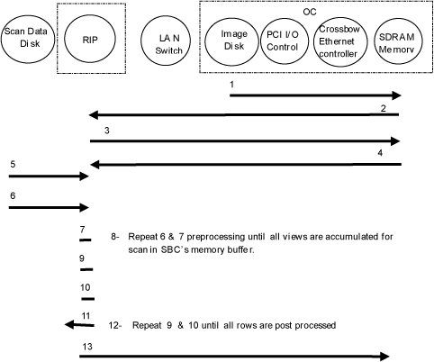
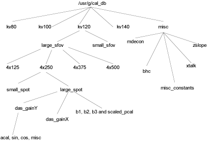

Proprietary to General Electric
Direction 5114045-800, Rev# 10
LightSpeed 4.X Service Information (Advanced)
Proprietary to General Electric |
The OC driver process (scanUtilsRx) sequences and controls the calibration process. Scans are prescribed one at a time to the Scan Recon Unit (SRU). At the end of each scan, this process receives a scan key that contains the exam, series and scan number of the scan just acquired in the scan file database. This key is then sent to another process on the SRU called ACCS (Alignment Calibration Calculation Server) to do the calibration specific processing. ACCS is a process that simply sits and waits for requests (events). When it receives one, it clones itself and the child process (newly created process) will carry out the task requested by the event. After responding to the event, the server will go back to listening to events again. In general, calibration processing involves preprocessing and calibration specific post-processing. All of calibration processing is done by the ACCS child process. At the end of processing this process will write to the calibration database, send a response event back to the OC driver and exit. Refer to Illustration 1, for a breakdown of the data flow and Table 1, for a cross-reference of software function, errors, and FRU information.
Illustration 1: Behavioral Signal and Process Flow Diagram

Table 1: Cal Data Save - Functional Operation & Troubleshooting
| Signal Flow # | Reporting Host | Software Process | Software Function | Associated Errors | FRU(s) Involved |
|---|---|---|---|---|---|
| 1 | OC | ScanUtilRx | Read cal protocol from disk | 230023020 | OC DIsk |
| 2 | OC | ScanUtilRx | Send scan prescription to the SBC | 230023002, 230023003 | RIP, LAN Switch, Connections |
| 3 | RIP | scanMgr | SBC sends scan key to scanUtilRx after scan is complete | LAN Switch, Connections | |
| 4 | OC | ScanUtilRx | Send scan key with info on what type of cal vector to create | LAN Switch, Connections | |
| 5 | RIP | accs | Get header, offset vector, cal module from scan data disk | getheader: 230017013get offset vector: 230017063get cal module: 230017063 | SDD |
| 6 | RIP | accs | Get superview, a single view of data for all four rows | 230017014 | SDD |
| 7 | RIP | accs | Preprocess superview; accumulate in buffer | 230017059 | RIP Memory |
| 8 | RIP | accs | Repeat steps 6 & 7 until all views are processed | RIP Memory | |
| 9 | RIP | accs | Accumulated pre-processed data is view averaged (sin & cos vectors not view averaged) | RIP Memory | |
| 10 | RIP | accs | Cal specific post processing by row depending on cal type (acal, pcal, etc.) | 230017082-4, 230017612, 230017620 | |
| 11 | RIP | accs | Write cal vector to Caldb on Local Disk | 230017619, 230017088-100 | LSD |
| 12 | RIP | accs | Steps 9 & 10 repeat until all rows are processed | RIP Memory, LSD | |
| 13 | RIP | accs | ’Cal processing done’ MSG to ScanUtilRx | 230023004 | LAN Switch or connections |
SBC ide level diagnostics
LAN Diagnostics
fx disk utility
| NOTE: | Any failures with reading and writing of cal vectors may be caused by a problem in the cal directory structure. |
Although the calibration database is located on the OC system disk, the RIP board can read and write to it. The calibration vector files are binary files of the Calibration Vector IQ file type. The database is organized as a tree structure, which makes it easy to understand and access the different sections of this database. The tree structure of the calibration database is given in Illustration 2.
Illustration 2: Calibration Database Structure

There are 4 different KVs, 2 SFOVs, 4 Slice Collimations and 2 Spots. The total numbers of stations is the product of those four numbers, which is 64. Each station requires one non-bowtie scan (which is shared between body and head bowtie filter), one bowtie (head or body) filter scan, one p35 scan and one w20 or p48 scan depending on the SFOV. Additionally, scans need to be taken to populate the different das_gains for the large_sfov.